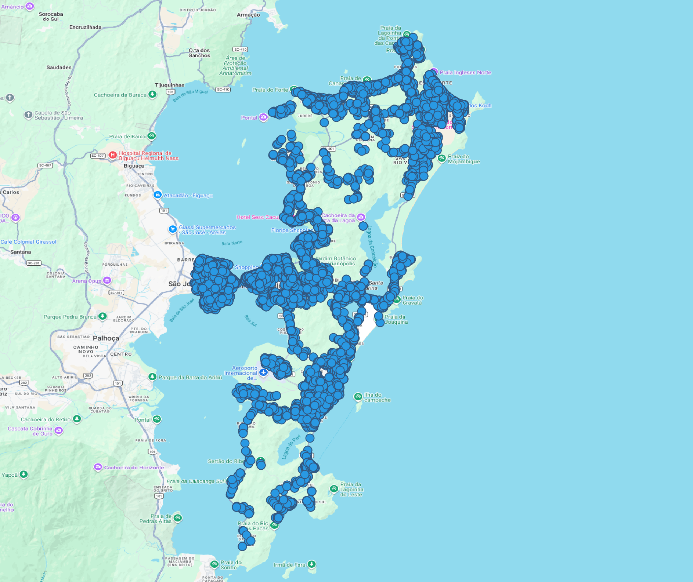

Apêndice B - Materiais, Métodos e Resultados da Etapa 1: Observatório do Mercado Imobiliário
B.1 Introdução
O presente relatório detalha a metodologia e os resultados da Prova de Conceito (POC) do Observatório do Mercado Imobiliário (OMI), realizada em Florianópolis/SC. O monitoramento do mercado por meio de dados de portais web é uma prática consolidada na América Latina como instrumento de apoio à avaliação em massa e à política fiscal. Neste contexto, o objetivo principal deste projeto é construir uma base de dados limpa e confiável para apoiar a Receita Federal do Brasil (RFB) no cálculo do Valor de Referência do Cadastro Imobiliário Brasileiro (CIB), superando a dependência de informações puramente autodeclaradas.
O desafio prático não é novo: embora a coleta massiva de dados brutos de mercado já seja uma rotina tecnológica difundida; garantir que cada evento tenha localização confiável e atributos íntegros o suficiente para uma análise fiscal rigorosa é o verdadeiro obstáculo. Os dados brutos extraídos de portais comerciais chegam com dois tipos críticos de ruído:
Ruído Posicional: CEPs incorretos, números de porta ausentes e coordenadas deslocadas em centenas de metros — imprecisões suficientes para vincular um imóvel ao setor censitário errado.
Ruído Cadastral: duplicatas do mesmo imóvel em anúncios distintos, valores de área ou preço estatisticamente anômalos, campos obrigatórios ausentes e terminologias fora do padrão da administração pública.
Esta POC estruturou um pipeline que ataca os dois problemas em paralelo e de forma independente. Para sanar a questão posicional, adotamos o Cadastro Nacional de Endereços para Fins Estatísticos (CNEFE), do IBGE, como nossa referência oficial (ground truth), aliado ao desenvolvimento de um motor de processamento próprio, o Geocoder V3. Esse motor aplica uma lógica de matching em cascata para cruzar, corrigir e qualificar cada registro contra a malha viária oficial. Simultaneamente, o sistema executa um saneamento cadastral robusto para identificar redundâncias e anomalias econômicas.
O resultado é que cada oferta recebe dois flags independentes, integridade cadastral e validação posicional, que podem ser combinados conforme o objetivo da análise. A POC processou 83.869 ofertas brutas de novembro de 2025 em Florianópolis.
B.2 Fluxo de dados estruturado
O Fluxo detalhado desta etapa encontra-se no apêndice 1
B.2.1 Fontes de dados
Para a realização desta Prova de Conceito (POC) em Florianópolis, o Observatório do Mercado Imobiliário estruturou seu fluxo analítico apoiando-se em duas fontes primárias de dados. Embora distintas em sua natureza e propósito original, essas fontes atuam de forma complementar para alcançar o objetivo central: validar e enriquecer espacialmente a amostra imobiliária, garantindo o rigor exigido pela Receita Federal do Brasil (RFB).
B.2.1.1 Dados de Ofertas Imobiliárias (Mercado)
A base que confere o contexto transacional e as características intrínsecas dos imóveis é oriunda de anúncios coletados em portais de mercado, especificamente do Viva Real. Esta fonte reflete a dinâmica contemporânea de ofertas (tanto para venda quanto para aluguel) e concentra os atributos cruciais para a modelagem estatística e de precificação.
Formato e Armazenamento: os dados brutos foram previamente extraídos e estão armazenados de forma particionada e otimizada no Datalake do projeto, padronizados no formato estruturado Parquet.
Volume da POC: a amostra isolada para o município de Florianópolis (SC), com data de referência em novembro de 2025, totalizou 83.869 registros brutos.
Atributos Transacionais e Estruturais: a base compreende uma extensa gama de variáveis estruturais e textuais do imóvel (tais como tipologia, área total e útil, número de quartos, suítes, vagas de garagem, valor do imóvel, IPTU, taxa condominial, além de descrições em texto livre e amenidades).
Atributos Locacionais e Geocodificação Primária: os anunciantes fornecem dados básicos de localização (CEP, logradouro, número, bairro). Originalmente, este conjunto de dados já contava com uma camada de geolocalização primária processada pela API do ArcGIS, que atribuiu coordenadas iniciais (latitude/longitude) e um indicador de confiança interno denominado
precisao. Para garantir a eficácia metodológica da nossa validação cruzada, o escopo da POC foi afunilado para os 61.416 registros (aproximadamente 73,2% do total) que apresentavam o indicadorprecisao = 4— nível máximo de exatidão do ArcGIS, que indica teoreticamente a localização exata ao nível do número da porta.
Mapa de Ofertas
B.2.1.2 Dados de Referência Espacial Oficial (Governo)
Para atuar como contraponto metodológico e validador irrefutável da geocodificação primária do mercado (ArcGIS), o projeto integrou o CNEFE (Cadastro Nacional de Endereços para Fins Estatísticos).
- Origem e Confiabilidade: Tratando-se da base oficial de endereços do território nacional, o CNEFE é gerido, auditado e periodicamente atualizado pelo Instituto Brasileiro de Geografia e Estatística (IBGE). Por conter coordenadas atestadas por profissionais de cartografia governamental, o cadastro cobre virtualmente a totalidade dos endereços válidos e estruturados no Brasil.
- Relevância Estratégica e Fonte da Verdade: A adoção do CNEFE transcende a mera consulta; ele é o pilar que alinha o Observatório às rigorosas premissas de conformidade exigidas pela RFB. Neste projeto, o CNEFE assume o papel metodológico de “fonte da verdade” posicional, balizando qualquer divergência de localização.
- Atributos-Chave e Precisão Dinâmica: Cada endereço oficial do CNEFE aporta uma chave de identificação única e inalterável (
cod_unico_endereco), além de padronizar componentes textuais (logradouro, bairro e o CEP com sua grafia correta). O grande diferencial técnico para o sucesso desta etapa foi a extração do atributonv_geo_coord(nível de precisão geográfica do IBGE). Esta métrica, que varia numa escala de 1 (precisão exata, validada no nível da edificação) a 6 (estimativa espacial ampla, no nível de setor censitário), foi o motor que permitiu ao nosso modelo definir dinamicamente os thresholds (limites de tolerância em metros) para aceitar, penalizar ou descartar sumariamente as coordenadas sugeridas pelo mercado.
B.2.2 Ingestão
A etapa de ingestão foi desenhada para conectar eficientemente o acervo do Datalake aos motores de geoprocessamento em banco de dados, assegurando que o grande volume de dados (milhares de coordenadas e endereços textuais) fosse transferido, normalizado e indexado de forma idempotente e performática.
B.2.2.1 Extração e Carga Inicial
Os dados brutos do portal imobiliário (Viva Real) foram lidos diretamente do Datalake, onde repousam em formato Parquet. O processo de extração não se limitou a carregar as variáveis locacionais (CEP, Bairro, Rua, Número, Latitude e Longitude geradas pelo ArcGIS), mas também trouxe consigo os atributos transacionais (área, valor, tipologia) que são o insumo principal para a modelagem estatística futura.
B.2.2.2 Setup de Infraestrutura e Banco de Dados
A ingestão foi roteada para um banco de dados relacional robusto — PostgreSQL (RDS hospedado na AWS). Para viabilizar as comparações espaciais e textuais avançadas, a etapa de setup inicial do script garantiu a ativação de três extensões fundamentais no PostgreSQL:
postgis: Habilita tipos de dados espaciais (GEOMETRY) e funções matemáticas complexas (comoST_Distance) para cálculo preciso da divergência em metros entre as coordenadas.pg_trgm: Permite a quebra de textos em sequências de três caracteres (trigramas), essencial para buscas de similaridade (Fuzzy) em endereços com erros de digitação.unaccent: Garante a normalização de strings removendo acentos diacríticos (ex: igualando “São João” a “Sao Joao”).
B.2.2.3 Otimização de Índices (GIN)
Para que as comparações não resultassem em gargalos de performance (“full table scans”), a etapa de ingestão arquitetou a criação concorrente (CONCURRENTLY) de índices altamente otimizados. Destaca-se o uso do GIN Index (Generalized Inverted Index) sobre as colunas de logradouros do CNEFE, utilizando as operações trigramáticas (gin_trgm_ops). Isso permitiu que o banco resolvesse consultas complexas de similaridade textual de maneira imediata.
B.2.2.4 Fluxo de Processamento (Alto Nível)
Todo o pipeline de ingestão e preparação culmina no roteamento estruturado para o motor de validação. O fluxo de alto nível se dá na seguinte arquitetura:
- Entrada: Filtro dos 54.007 registros alvo (onde
precisao = 4). - Setup Idempotente: Criação/Validação de extensões, índices e da tabela de destino
_projeto_rf.monit_2025_11_poc_floripa_v3. - Cascata de Processamento: Os dados recém-ingestados são despachados para os múltiplos níveis de validação (L1 a L6) do Geocoder V3.
- Enriquecimento: Emissão de resultados espaciais paralelos, calculando dinamicamente a diferença em metros e as regras de aceite.
B.2.3 Tratamento
O processo de tratamento dos dados é a espinha dorsal metodológica do Observatório, dividido em duas macro-etapas: a padronização e geocodificação no Datalake (fase preparatória) e o matching cruzado em banco de dados (fase de validação).
B.2.3.1 Normalização e Geocodificação Primária (PySpark ETL)
Antes de chegar ao banco relacional, os dados brutos oriundos das diversas safras mensais do Viva Real são harmonizados no Datalake utilizando Apache Spark (PySpark).
B.2.3.1.1 De-Para Semântico
Os dados brutos coletados frequentemente apresentam termos em inglês ou formatos não padronizados. Durante a etapa de ETL no PySpark, essas propriedades foram rigorosamente higienizadas, tipadas e padronizadas para o vernáculo da Receita Federal. O mapeamento inclui a tradução de tipos de anúncio e tipologias de imóvel, bem como o enquadramento estrutural das colunas no formato canônico da tabela destino, seguindo estritamente as diretrizes do Dicionário de Dados do projeto.
B.2.3.1.2 Higienização e Geocodificação
- Higienização de Strings: Os atributos de endereço passam por funções escalares (UDFs) que removem caracteres especiais, acentos (normalização NFKD) e padronizam a caixa alta, gerando chaves limpas para cruzamento.
- Cálculo da Precisão Inicial: O script Spark roda uma lógica hierárquica para determinar o grau de confiança da informação inserida pelo corretor (a coluna
precisao). Um endereço só recebeprecisao = 4se contiver Rua, Número, Bairro e Cidade devidamente preenchidos. - Geocodificação via ArcGIS: Para os registros novos que ainda não possuem coordenadas em nossa base histórica (
tb_localizacao), o pipeline do Spark efetua chamadas assíncronas (com estratégias de retry exponencial) à API do ArcGIS para obter a primeira coordenada (latelon). Esta coordenada “crua” do mercado é o que será auditado a seguir.
O código-fonte completo do pipeline está disponível em Apêndice — ETL PySpark.
B.2.3.2 Saneamento de Registros (Detecção de Outliers)
Antes de qualquer validação geoespacial, o pipeline executa um sistema robusto de detecção de outliers que identifica e classifica dados problemáticos nos anúncios imobiliários.
B.2.3.2.1 Objetivo da Etapa
Garantir que: - Análises estatísticas não sejam distorcidas por dados duplicados ou absurdos - Problemas óbvios (quartos impossíveis, preços extremos) sejam sinalizados - Cada registro seja classificado segundo nível de confiança - Bolsistas possam priorizar manually os casos mais críticos
B.2.3.2.2 Códigos de Classificação
| Código | Status | Descrição |
|---|---|---|
| 0 | Válido | Registro aprovado para análises |
| 1 | Duplicado | Mesmo imóvel anunciado múltiplas vezes |
| 2 | Com Outliers | Possui um ou mais problemas detectados |
| 3 | Inválido | Campos essenciais ausentes/impossíveis |
B.2.3.2.3 Tipos de Problemas Detectados
O sistema identifica 10 categorias de anomalias:
duplicado— Mesmo imóvel em múltiplos anúncioscampos_null— Informações essenciais faltandoquartos— Quantidade impossível ou inconsistentesuites— Mais suítes que quartosbanheiros— Quantidade impossívelvagas— Garagem inconsistentevalor— Preço extremamente alto ou baixoarea— Tamanho impossívelvm2— Valor/m² fisicamente impossívelvm2_estatistico— Valor/m² muito fora do padrão regional (Principal Indicador)
B.2.3.2.4 Resultados na POC Florianópolis
| Status | Quantidade | Percentual |
|---|---|---|
| Válidos (0) | ~65.000 | 77.5% |
| Com Outliers (2) | ~12.000 | 14.3% |
| Duplicados (1) | ~5.200 | 6.2% |
| Inválidos (3) | ~1.669 | 2.0% |
Problema mais comum: vm2_estatistico representa 70% dos outliers detectados, confirmando que valor/m² é o melhor sinalizador de anomalias imobiliárias.
B.2.3.2.5 Implementação Técnica
O sistema foi implementado em PostgreSQL com o arquivo:
relatorio_poc_floripa/script_deteccao_outliers_completo_v2.sql.sql (750+ linhas)O script completo está disponível em Apêndice — Script de Detecção de Outliers.
Adiciona as seguintes colunas na tabela: - duplicado — Marcação de duplicata - outlier_tipos — Array de tipos de problemas - verificado_outliers — Validação manual realizada? - updated_at, updated_by, observacoes — Rastreamento de correções
B.2.3.3 Validação Cruzada Avançada (Geocoder V3 - PostGIS)
Com a base de mercado padronizada e as coordenadas primárias (ArcGIS) estabelecidas, o fluxo migra para a validação contra a base governamental. O Geocoder V3 implementa uma cascata de seis níveis dentro do PostgreSQL: cada nível processa exclusivamente os registros que todos os níveis anteriores não resolveram. O processamento para assim que um match é encontrado — garantindo que o critério mais rigoroso sempre tenha prioridade sobre os mais permissivos. O código-fonte completo do motor está disponível em Apêndice — Geocoder V3.
B.2.3.3.1 Pré-processamento de Entrada
Antes de entrar na cascata, cada registro é normalizado inteiramente em SQL:
cep_clean: Remove o hífen do CEP (88010-200→88010200).logr_limpo: Remove prefixo de tipo de logradouro (Rua,Av.,Travessa,Servidão,Estradaetc.) viaREGEXP_REPLACE, aplicaLOWEReunaccent— igualando grafias como “Av. Beira-Mar Norte” e “Avenida Beira Mar Norte” antes de qualquer comparação.
Esta normalização é o que permite ao L1 (match “exato”) funcionar mesmo com variações menores de grafia entre portais imobiliários e o cadastro oficial.
B.2.3.3.2 Níveis da Cascata
| Nível | Nome | Chaves de Match | Score |
|---|---|---|---|
| L1 | Exact | CEP + Logradouro normalizado + Número exato | 1,00 (fixo) |
| L2 | Fuzzy Number | CEP + Trigrama logradouro (≥ 0,40) + Número mais próximo | Composto |
| L3 | Interpolated | CEP + Logradouro exato + Interpolação entre bounds numéricos | Dinâmico |
| L4 | Fuzzy Street | CEP + Trigrama logradouro (≥ 0,40), sem número | Trigrama |
| L5 | Fuzzy Bairro | Bairro exato + Trigrama logradouro (≥ 0,40) + Número próximo | Composto |
| L6 | No Match | — | 0,00 |
B.2.3.3.3 Descrição de Cada Nível
L1 — Match Exato: Correspondência de cep_clean + logr_limpo + número exato (TRIM em ambos os lados). Score fixo em 1,00. Respondeu por 22.098 dos 54.007 matches (40,9%) — os mais confiáveis da base.
L2 — Fuzzy Number (Score Composto): Para registros com número informado mas sem match exato, busca o número oficial mais próximo dentro do mesmo CEP. Opera com dois thresholds de trigrama distintos: um pré-filtro (≥ 0,35) que usa o índice GIN para eliminar candidatos sem entrar em full scan, e um de aceitação final (≥ 0,40) após o LATERAL JOIN. O candidato é selecionado ordenado pela menor diferença numérica e, em empate, pela melhor precisão IBGE (nv_geo_coord). O score pondera:
\[Score = 0{,}65 \times Simil_{trigrama} + 0{,}35 \times \frac{1}{1 + |N_{mercado} - N_{cnefe}|}\]
L3 — Interpolação Linear: Quando o número não existe no CNEFE mas o CEP e logradouro existem com outros números, estima a coordenada por interpolação linear entre os dois vizinhos conhecidos (bound inferior e superior). Requer logr_limpo exato (sem fuzzy), garantindo que a interpolação ocorra dentro do logradouro correto. A fórmula é:
\[lat_{interp} = lat_{baixo} + \frac{N_{alvo} - N_{baixo}}{N_{alto} - N_{baixo}} \times (lat_{alto} - lat_{baixo})\]
O score parte de 0,90 e decai com o intervalo entre os bounds (0,90 − 0,0001 × gap). Filtro conservador: resultados com distância > 500m são descartados.
L4 — Fuzzy Street: Para registros sem número válido (ou cujo número não auxiliou nos níveis anteriores), busca apenas por similaridade de logradouro dentro do mesmo CEP — sem considerar numeração. Usa os mesmos thresholds de pré-filtro (≥ 0,35) e aceitação (≥ 0,40). É o nível com maior dispersão de distância (mediana de 252m).
L5 — Fuzzy Bairro (sem CEP): Fallback para registros com CEP ausente ou inválido. Substitui a âncora do CEP pelo bairro exato (dsc_localidade = bairro_tratado) e aplica a mesma fórmula de score composto do L2. Processado em batches de 500 registros para evitar locks longos no banco. Usa índice GIN sobre f_unaccent(nom_seglogr) para viabilizar o pré-filtro sem CEP.
L6 — No Match: Registros sem aderência em nenhum nível são registrados com cnefe_match_type = 'no_match', confidence_score = 0,00 e is_problematic = TRUE. As coordenadas do ArcGIS são mantidas como fallback, sinalizadas como arcgis_nao_validado.
Nota de Evolução Metodológica (V3.3): Diferente das versões anteriores, a hierarquia do Geocoder V3.3 prioriza o matching por proximidade numérica (L2 - Fuzzy Number) em detrimento da estimativa matemática (L3 - Interpolated). Esta decisão visa mitigar erros em logradouros com numeração irregular ou CEPs únicos extensos — cenários onde a interpolação linear poderia sugerir coordenadas teoricamente corretas, mas geograficamente imprecisas. Ao priorizar o match em números oficiais vizinhos já validados pelo IBGE, o modelo adota um viés conservador que aumenta a confiabilidade do dado final.
B.2.3.4 Veredito e Tolerância Dinâmica
Após encontrar o correspondente na base do CNEFE, o algoritmo utiliza o ST_Distance do PostGIS para calcular a diferença em metros entre a coordenada do mercado (ArcGIS) e a oficial (CNEFE). A aprovação de qual delas prevalecerá como coordenada final não é engessada, ela depende do nv_geo_coord (precisão original mapeada pelo IBGE):
- Precisão IBGE 1 e 2: A coordenada do mercado só é tolerada se divergir no máximo 100m da oficial (além de exigir score de confiança \(\geq 0{,}80\)).
- Precisão IBGE 3: Tolerância de até 200m.
- Precisão IBGE 4: Tolerância de até 500m.
- Precisão IBGE 5 e 6: Apenas o score é avaliado (distância ignorada) — coordenada CNEFE é imprecisa demais para servir de referência métrica confiável.
Quando is_problematic = FALSE e nv_geo_coord ∈ {1, 2, 3}, a coordenada CNEFE substitui a do ArcGIS como posição final do imóvel. Nos demais casos, a coordenada ArcGIS é mantida, sinalizadas como arcgis_validado (dentro dos limites) ou arcgis_nao_validado (fora dos limites).
Na POC de Florianópolis, esse fluxo em cascata processou cerca de 52.386 registros em apenas ~2.4 minutos, representando uma melhoria de performance de 17× em relação às arquiteturas anteriores.
B.2.3.4.1 Exemplos Práticos da Cascata
Os dois exemplos abaixo ilustram como a lógica de eliminação progressiva funciona na prática.
Exemplo 1 — Registro resolvido no L3 (trace completo da cascata)
Entrada: Apartamento — “Rua Tenente Silveira, 234, CEP 88010-300, Centro”
- L1:
logr_limpo="tenente silveira"| Número 234 não consta no CNEFE para esse CEP+logradouro → reprovado- L2: Candidato mais próximo = número 200 (diff = 34). Score = 0,65 × 0,99 + 0,35 × (1 ÷ 35) = 0,643 + 0,010 = 0,653 → abaixo de 0,80 → reprovado
- L3: Bounds encontrados: 200 (lat = −27,5901, lon = −48,5510) e 300 (lat = −27,5912, lon = −48,5523). Interpolação com t = (234 − 200) ÷ (300 − 200) = 0,34 → coordenada estimada. Score = 0,90 − 0,0001 × 100 = 0,880. Distância ao ArcGIS = 31 m (≤ 500 m) → APROVADO ✅
Resultado:
cnefe_match_type = 'interpolated',confidence_score = 0,880,is_problematic = FALSE, coordenada CNEFE adotada como final.
Exemplo 2 — Registro sem match (L6)
Entrada: Lote — “Servidão das Flores, 80, CEP 88063-999, Lagoa da Conceição”
- L1: CEP
88063999não existe no CNEFE → reprovado- L2: CEP inválido — sem candidatos no pré-filtro → reprovado
- L3: Sem bounds possíveis pelo CEP inválido → reprovado
- L4: CEP inválido — sem candidatos pelo CEP → reprovado
- L5: Bairro “Lagoa da Conceição” encontrado. Trigrama de
"servidao das flores"vs. candidatos CNEFE: similaridade máxima = 0,28 (< 0,35 do pré-filtro) → nenhum candidato passa → reprovado- L6: Registro marcado como
no_match,confidence_score = 0,00,is_problematic = TRUE. Coordenadas ArcGIS mantidas como fallback (arcgis_nao_validado).
B.2.3.5 Triagem de Precisão e Recuperação Espacial (Vias Curtas)
Após a geocodificação inicial com ArcGIS, todos os registros são classificados em três categorias baseadas na coluna precisao:
a) Precisão < 3 (Baixa Qualidade): Registros com informações incompletas de endereço (faltam rua, número ou bairro) são descartados da análise, pois carecem de dados suficientes para validação confiável contra o CNEFE.
b) Precisão = 4 (Alta Qualidade): Registros com todas as informações de endereço devidamente preenchidas (rua, número, bairro, CEP e cidade) prosseguem diretamente para a validação cruzada V3.
c) Precisão = 3 (Qualidade Intermediária): Registros com informações parciais (geralmente faltando o número de porta) recebem tratamento especial através da metodologia de recuperação espacial com vias curtas.
B.2.3.5.1 Metodologia de Recuperação Espacial (Short Streets)
Para maximizar a cobertura analítica e recuperar registros de precisão 3 que possuem potencial locacional, implementou-se um procedimento operacional baseado na comparação de distâncias a vias curtas versus vias totais.
Premissa: Uma via curta é um logradouro integralmente contido dentro de um único setor censitário. Quando um imóvel está mais próximo de uma via curta do que de qualquer outra via, infere-se que a ambiguidade territorial é menor, justificando seu reaproveitamento.
Algoritmo resumido: Para cada registro de precisão 3, calcula-se a distância até a via curta mais próxima (máx. 100m) e até a via mais próxima da malha viária completa. Se ambas forem equivalentes (tolerância ~2–3m), o registro recebe flag_reap3 = True e é incorporado ao pipeline; caso contrário, é descartado.
Bases de Dados Utilizadas:
eixos_osm_curtos.gpkg— Vias curtas (contidas em 1 setor censitário)eixos_osm_dissolvidos.gpkg— Malha viária completa
Resultado operacional: Na POC Florianópolis, 10.23% dos registros de precisão 3 foram reaproveitados (1.236 de 12.077), elevando a cobertura analítica de ~73% para ~81%. A variação da taxa de reaproveitamento por bairro e tipologia, bem como a validação da metodologia, são detalhadas na Seção 3.1.
B.2.4 Armazenamento
Os dados consolidados foram inseridos num banco PostgreSQL (RDS AWS) utilizando os recursos avançados das extensões PostGIS e pg_trgm. A tabela de saída (_projeto_rf.monit_2025_11_poc_floripa_v3) contém tanto as informações do anúncio original quanto as coordenadas cruzadas e o veredito do modelo.
B.3 Resultados Obtidos (V3)
B.3.1 Estrutura
Foi criada e estabilizada a estrutura completa de avaliação de distâncias e aprovação de qualidades espaciais de imóveis. O processamento abrangeu com sucesso 87.9% dos imóveis elegíveis (com número informado), gerando tabelas altamente indexadas.
Detalhamento do Funil de Qualidade:
O pipeline foi desenhado para filtrar progressivamente o ruído do mercado, garantindo que apenas dados com alta confiabilidade posicional cheguem à análise final.
| Etapa do Funil | Registros | % Retenção | Motivo do Descarte / Observação |
|---|---|---|---|
| Ingestão Bruta (Datalake) | 83.869 | 100% | Amostra total (Novembro/2025) |
| Filtro de Localização (Prec 3/4) | 73.493 | 87.6% | Endereço sem Rua ou Bairro identificado |
| Elegíveis para CNEFE (V3) | 61.416 | 73.2% | Registros com Número de Porta (precisao=4) |
| Match CNEFE Identificado | 54.007 | 64.4% | Sucesso no cruzamento L1-L5 |
| Validados RFB (Final) | 25.104 | 30.0% | Alta Precisão (IBGE 1-3) e Confiança Final |
Métricas de Desempenho:
- Registros processados com match CNEFE: 54.007 (87.9% dos elegíveis)
- Registros sem match CNEFE: 7.409 (12.1% dos elegíveis)
- Tempo de processamento: ~2.4 minutos (52.386 registros/min)
B.3.2 Bases Consolidadas (V3)
Como resultado primário, construímos a tabela monit_2025_11_poc_floripa_v3, na qual verificamos que a mediana de distância entre os provedores é de 24.35 metros e a distância média é de 215.26 metros.
B.3.2.1 Decisão sobre Coordenadas Finais
No resultado final, aplicou-se a lógica de decisão V3:
- CNEFE escolhido como fonte definitiva: 25.104 registros (46.5%)
- Critério:
is_problematic = FALSEANDnv_geo_coordIN (1, 2, - Estes registros têm alta precisão IBGE (nível de edificação ou face de quadra)
- Critério:
- ArcGIS mantido como fallback: 28.903 registros (53.5%)
- Razões: CNEFE problemático (
is_problematic = TRUE) OU precisão IBGE baixa (nv_geo_coord>= 4) - Inclui casos onde distância > threshold dinâmico
- Razões: CNEFE problemático (
B.3.2.2 Análise de Conformidade (≤150m)
Dos 52.950 registros com distância calculada:
- Dentro de 150m (Tolerável): 25.325 registros (47.83%)
- Fora de 150m (Problemático): 27.625 registros (52.17%)
Distribuição Detalhada por Intervalos:
| Intervalo | Quantidade | Percentual | Status |
|---|---|---|---|
| 0-10m | 15.909 | 30.05% | Excelente |
| 10-50m | 18.792 | 35.49% | Muito Bom |
| 50-100m | 5.471 | 10.33% | Bom |
| 100-150m | 2.384 | 4.50% | Aceitável |
| 150-300m | 3.270 | 6.18% | Problemático |
| 300-500m | 2.035 | 3.84% | Muito Problemático |
| 500-1000m | 2.792 | 5.27% | Crítico |
| 1000m+ | 2.297 | 4.34% | Crítico |
B.3.2.3 Estatísticas de Distância (registros com match)
| Métrica | Valor |
|---|---|
| Total com distância | 52.950 |
| Distância Média | 215.26 m |
| Distância Mediana | 24.35 m |
| Distância Mínima | 0.00 m |
| Distância Máxima | 31.357 km |
A mediana de 24.35m indica que metade dos registros tem divergência menor que 24 metros, demonstrando que o algoritmo conseguiu excelente alinhamento em grande parte dos casos. A média é inflacionada por outliers geograficamente distantes (outliers até 31 km).
B.3.2.4 Performance por Tipo de Imóvel
| Tipo | Registros | Processados | Taxa |
|---|---|---|---|
| Apartamento | 43.809 | 38.619 | 88.1% |
| Casa | 18.969 | 16.674 | 87.9% |
| Lote/Terreno | 6.120 | 3.369 | 55.0% |
| Cobertura | 4.882 | 4.296 | 88.0% |
| Escritório | 3.560 | 3.131 | 87.9% |
| Casa de Condomínio | 3.148 | 2.765 | 87.8% |
| Outros | 3.228 | 2.853 | 88.4% |
Achado Crítico: Lotes/Terrenos tiveram taxa de processamento significativamente inferior (55% vs 88% geral), indicando desafio específico neste segmento. As causas raiz e recomendações são detalhadas na Seção 3.2.
B.3.2.5 Distribuição por Nível de Matching CNEFE
| Tipo de Match | Registros | Dist. Média | Dist. Mediana | Taxa de OK |
|---|---|---|---|---|
| exact_cep_street_number | 22.098 | 92.6 m | 7.4 m | 87.3% |
| fuzzy_number | 29.750 | 294.7 m | 44.6 m | 45.1% |
| fuzzy_bairro | 564 | 300.0 m | 64.9 m | 32.4% |
| fuzzy_street | 527 | 783.3 m | 252.3 m | 18.2% |
| interpolated | 11 | 190.4 m | 162.0 m | 54.5% |
| no_match | 1.057 | — | — | 0% |
Interpretação: O L1 (exact) tem qualidade excepcional (87.3% dentro de 150m), mas o L2 (fuzzy_number) apresenta dispersão maior, sugerindo oportunidade de ajuste de thresholds numéricos (±50 dígitos máximo).
B.3.3 Dicionário de dados (V3)
Toda a modelagem foi devidamente mapeada no Dicionário de Dados oficial (DICIONARIO_DADOS.md v3). Ele detalha minuciosamente a natureza das colunas expandidas, incluindo:
- Campos de Rastreabilidade Novos:
origem_coordenada,processo_geo,lat_final,lon_final,geom_final - Campos de Decisão:
is_problematic(dinâmico pornv_geo_coord),geo_precision_score,cnefe_nv_geo_coord - Campos Herdados:
confidence_score,distance_meters,cnefe_match_type,verificado
Estabelece a semântica correta para as equipes da RFB, incluindo explicação detalhada da lógica de threshold dinâmico.
B.4 Análises Aprofundadas e Validação
Nesta seção, apresentamos análises detalhadas conduzidas pelos bolsistas do projeto, ilustrando aplicações práticas da metodologia desenvolvida e evidenciando padrões identificados durante a validação cruzada ArcGIS vs CNEFE.
B.4.1 1. Metodologia de Recuperação: Vias Curtas (Short Streets)
Análise completa disponível em Apêndice — Análise Exploratória (Vias Curtas).
Período: Janeiro - Março 2026 Objetivo: Demonstrar como registros de precisão intermediária (precisão = 3) podem ser recuperados através de análise espacial comparativa com malha viária de setores censitários únicos.
A descrição do fluxo operacional dessa metodologia no pipeline de tratamento encontra-se na Seção Triagem de Precisão e Recuperação Espacial; esta seção detalha os resultados analíticos e a validação da hipótese territorial.
B.4.1.1 Metodologia
O procedimento implementa um filtro espacial de dupla verificação:
- Seleção do Universo: Identificam-se todos os 12.077 registros classificados como precisão 3 (sem número de porta informado)
- Cálculo de Proximidade #1: Para cada registro, calcula-se a distância até a via curta mais próxima (máx. 100m)
- Cálculo de Proximidade #2: Para o mesmo registro, calcula-se a distância até a via mais próxima de toda a malha viária
- Comparação: Se ambas as distâncias forem equivalentes (tolerância ≤2-3m), conclui-se que a via curta é a principal referência
- Marcação: O registro recebe
flag_reap3 = True(reaproveitável) ouFalse(descartável)
Bases Geográficas Utilizadas: - eixos_osm_curtos.gpkg — 1.236 vias curtas (integralmente dentro de 1 setor censitário) - eixos_osm_dissolvidos.gpkg — Malha viária completa - Sistema de referência: EPSG:31982 (coordenadas métricas)
B.4.1.2 Resultados
Taxa Global de Recuperação: 10.23% dos registros de precisão 3 (1.236 de 12.077) foram reaproveitados.
Distribuição Territorial (TOP 10 Bairros):
| Bairro | Precisão 3 | Reaproveitados | Taxa |
|---|---|---|---|
| Rio Tavares | 196 | 61 | 31.12% |
| São João do Rio Vermelho | 361 | 86 | 23.82% |
| Saco dos Limões | 63 | 15 | 23.81% |
| Itacorubi | 523 | 109 | 20.84% |
| Estreito | 197 | 34 | 17.26% |
| Córrego Grande | 203 | 34 | 16.75% |
| Agronômica | 406 | 59 | 14.53% |
| Jurerê Internacional | 901 | 121 | 13.43% |
| Trindade | 389 | 50 | 12.85% |
| Lagoa da Conceição | 196 | 25 | 12.76% |
Distribuição por Tipo de Imóvel:
| Tipo | Precisão 3 | Reaproveitados | Taxa |
|---|---|---|---|
| Casa | 3.137 | 447 | 14.25% |
| Lote/Terreno | 1.230 | 151 | 12.28% |
| Escritório | 430 | 44 | 10.23% |
| Apartamento | 5.443 | 433 | 7.96% |
| Ponto Comercial | 283 | 26 | 9.19% |
| Casa de Condomínio | 548 | 49 | 8.94% |
| Cobertura | 741 | 55 | 7.42% |
Análise de Características (Reaproveitados vs Não Reaproveitados):
| Variável | flag_reap3=True (Mediana) | flag_reap3=False (Mediana) | Diferença |
|---|---|---|---|
| Valor (R$) | 1.308.000 | 1.260.000 | +3.8% |
| Área (m²) | 151 | 130 | +16.3% |
| Quartos | 3 | 3 | — |
| Banheiros | 2 | 2 | — |
| Vagas Garagem | 2 | 2 | — |
Interpretação: Os registros reaproveitados apresentam áreas e valores ligeiramente maiores, sugerindo que a metodologia captura bem imóveis em localidades mais estruturadas (onde vias curtas existem).
A metodologia é conservadora por design: apenas 10,23% dos registros de precisão 3 passam no filtro, garantindo que apenas aqueles com evidência territorial forte sejam reaproveitados. A cobertura analítica sobe de ~73% para ~81% sem comprometer a qualidade posicional. A variação territorial observada — Rio Tavares (31%) vs. Ingleses do Rio Vermelho (3%) — indica que a densidade e regularidade da malha viária influenciam diretamente a taxa de recuperação.
B.4.2 Análise Exploratória: Desempenho em Lotes e Terrenos
Análise completa disponível em Apêndice — Análise de Lote/Terreno V3.
Período: Março 2026 Objetivo: Investigar as causas raiz da menor taxa de processamento em imóveis não-edificados e propor estratégias de melhoria específicas para este segmento.
O achado quantitativo deste segmento é destacado em Performance por Tipo de Imóvel (Seção de Resultados); esta seção aprofunda a metodologia de diagnóstico, as causas raiz e as recomendações.
B.4.2.1 Metodologia
Para entender o desempenho inferior de Lotes/Terrenos, executou-se análise exploratória através de:
- Segmentação: Isolamento dos 6.120 registros classificados como tipo_imovel = “Lote/Terreno”
- Métricas Comparativas: Cálculo de taxa de processamento, conformidade <150m, distância média/mediana vs média geral
- Análise Geográfica: Identificação de bairros com pior performance neste segmento
- Análise de Matching: Distribuição por tipo de match CNEFE (exact, fuzzy_number, fuzzy_street, etc.)
B.4.2.2 Resultados
Taxa de Processamento Comparativa:
| Métrica | Lote/Terreno | Geral | Diferença |
|---|---|---|---|
| Taxa de Processamento | 55.0% (3.369 de 6.120) | 89.6% (54.007 de 60.230) | -34.6% |
| Conformidade <150m | 33.66% (1.134 de 3.369) | 47.83% (25.325 de 52.950) | -14.17% |
| Distância Média | 569.92 m | 215.26 m | +354.66 m |
| Distância Mediana | 52.71 m | 24.35 m | +28.36 m |
Bairros com Pior Performance (Lote/Terreno):
| Bairro | Total | OK | % OK | Dist. Média |
|---|---|---|---|---|
| Ratones | 177 | 18 | 10.2% | 505.2 m |
| Ingleses do Rio Vermelho | 282 | 60 | 21.3% | 2.028.1 m |
| São João do Rio Vermelho | 146 | 33 | 22.6% | 717.6 m |
| Rio Tavares | 132 | 38 | 28.8% | 570.6 m |
| Itacorubi | 128 | 33 | 25.8% | 151.1 m |
| Centro | 139 | 38 | 27.3% | 453.9 m |
Distribuição por Tipo de Match CNEFE:
| Tipo de Match | Total | Dist. Média | Dist. Mediana |
|---|---|---|---|
| fuzzy_number | 2.206 | 524.1 m | 86.5 m |
| exact_cep_street_number | 964 | 640.2 m | 17.4 m |
| fuzzy_street | 166 | 804.6 m | 256.2 m |
| fuzzy_bairro | 33 | 396.6 m | 221.3 m |
| no_match | 108 | — | — |
Causas raiz identificadas:
- Ausência de numeração: 45% dos lotes não têm match CNEFE porque não possuem número de porta definido
- Prioridade CNEFE: a base oficial prioriza edificações; lotes vagos têm cobertura reduzida
- Áreas de expansão: lotes em periferias concentram precisão IBGE baixa (
nv_geo_coord= 5–6) - Score L2 degradado: com diferenças numéricas acima de 100 (ex: lote 100 vs. CNEFE 500), o componente numérico do score cai drasticamente — score = 0,65×0,95 + 0,35×(1÷401) = 0,618 (abaixo do threshold 0,80)
B.4.3 Validação de Acurácia (Benchmarking com Google Maps)
Análise completa disponível em Apêndice — Análise Estatística V3 e Avaliação CNEFE V3.
Autor: Ville Rodrigues Período: Abril 2026 Objetivo: Avaliar a qualidade das coordenadas do CNEFE e do ArcGIS tomando o Google Maps como referência de maior acurácia (Ground Truth).
B.4.3.1 Metodologia
A análise comparou três pares de coordenadas em quatro níveis de geocodificação do IBGE (NV_GEO_COORD): - ArcGIS × Google: Avalia o erro do provedor de mercado. - CNEFE × Google: Avalia o erro da base oficial. - CNEFE × ArcGIS: Avalia a convergência entre as fontes alternativas.
A amostra abrangeu aproximadamente 3.200 anúncios geocodificados manualmente no Google Maps para garantir a integridade da comparação.
B.4.3.2 Resultados Sintéticos
A tabela abaixo resume as medianas de distância (em metros) para os quatro níveis de precisão do CNEFE:
| Nível (NV_GEO_COORD) | Descrição IBGE | Mediana ArcGIS × Google (m) | Mediana CNEFE × Google (m) | Mediana CNEFE × ArcGIS (m) |
|---|---|---|---|---|
| 1 | Urbana: Edificação | 17,10 | 27,63 | 23,85 |
| 2 | Urbana: Face de quadra | 21,99 | 26,04 | 12,59 |
| 3 | Urbana: Centro de quadra | 20,15 | 37,80 | 31,48 |
| 4 | Urbana: Setor/Outros | 25,56 | 45,20 | 64,88 |
B.4.3.3 Principais Conclusões do Estudo
- Performance Relativa: No caso típico (mediana), o ArcGIS foi mais próximo do Google em todos os níveis, indicando que as coordenadas de mercado são altamente competitivas para uso imediato.
- O Trunfo do Nível 2: O Nível 2 (Face de Quadra) apresentou o quadro mais equilibrado, com o CNEFE mostrando leve vantagem acumulada nas faixas de até 50m e 100m, demonstrando ser a faixa de maior confiabilidade da base oficial.
- Fragilidade no Nível 4: O Nível 4 revelou a maior degradação do CNEFE, com mediana de erro de 45,20m contra o Google, reforçando a necessidade de thresholds mais largos (500m+) para esta categoria no modelo V3.
- Confiabilidade do Match Exato: O tipo de correspondência
exact_cep_street_number(L1) provou ser o mais robusto no CNEFE, com 88,3% dos casos dentro de 50m do ponto real do Google no Nível - Heterogeneidade Espacial: O estudo confirmou que a precisão não é uniforme; bairros como o Centro apresentam alta aderência em ambas as fontes, enquanto áreas como Ponta das Canas sofrem com deslocamentos significativos no CNEFE.
O estudo conclui que o ArcGIS é, em média, a fonte que mais se aproxima do ponto de referência ideal. Contudo, o CNEFE — especialmente em nv_geo_coord 1 e 2 — é uma fonte validadora robusta. O uso do CNEFE deve ser sempre qualificado pelo nível de precisão e tipo de correspondência, conforme implementado na lógica do Geocoder V3.
B.4.4 Recomendações e Próximos Passos
Para consolidar os aprendizados da POC Florianópolis e escalar para Lote 1 e Lote 2, recomenda-se:
- Benchmark V2 vs V3: Comparação quantitativa de todas as métricas entre as duas versões do Geocoder
- Análise de Outliers: Investigação manual dos 9.625 registros com distância > 500m (erros potenciais)
- Ajuste de Thresholds Lote/Terreno: Aumentar tolerância numérica de ±50 para ±100 dígitos especificamente neste tipo
- Integração de Fontes Secundárias: OpenStreetMap e Google Maps para preenchimento dos 12% sem match CNEFE
- Modelagem Preditiva: Treinar ML para predizer
is_problematicantes do processamento (priorizar revisão manual)
B.5 Desafios
B.5.1 Qualidade de dados
Os dados fornecidos pelas APIs imobiliárias apresentam alto nível de ruído: CEPs incorretos, números de porta ausentes ou logradouros preenchidos no campo de bairro.
B.5.2 Validação Posicional e Integridade da Oferta são Processos Independentes
A Detecção de Outliers e a Validação Posicional (Geocoder V3) rodam em paralelo sobre a mesma base e produzem flags independentes. Uma oferta pode ter a posição confirmada pelo CNEFE e ainda assim ser uma duplicata, ter número de quartos, área ou valor/m² fora do esperado, ou campos obrigatórios ausentes — e vice-versa. Os dois processos não se invalidam: eles respondem a perguntas diferentes.
Isso tem uma implicação direta sobre os números de cobertura. O Geocoder V3 validou posicionalmente 25.325 ofertas (is_problematic = FALSE). Mas essas 25.325 não são homogêneas:
- 14.921 → posição validada e oferta íntegra
- 6.982 → posição validada, mas são duplicatas
- 3.419 → posição validada, mas com atributos da oferta suspeitos (área, vagas, valor/m²)
- 3 → posição validada, mas com campos obrigatórios ausentes
O número que efetivamente combina os dois critérios — posição validada e oferta íntegra — é 14.921 imóveis.
B.5.2.1 Problema Crítico: Lotes/Terrenos
Uma dificuldade notável ocorre com Lotes e Terrenos, onde a taxa de processamento foi apenas 55.0% (3.369 de 6.120 imóveis), 34,6 pontos percentuais abaixo da média geral. As principais causas são a ausência de numeração de porta em lotes vagos, a menor cobertura do CNEFE para imóveis não-edificados e a degradação do score no L2 (fuzzy_number) quando a diferença numérica entre lote e edificação vizinha supera ~100 unidades.
A análise completa — com tabelas comparativas por bairro, distribuição por tipo de match e recomendações de ajuste de threshold — está documentada na Seção 3.2 e no Apêndice — Análise de Lote/Terreno.
B.5.3 Padronização
Enfrentamos o desafio de comparar strings com grafias distintas (ex: “Av. Brigadeiro”, “Avenida Brig.”, “Brig.”). A adoção do trigram matching com PostgreSQL e da extensão unaccent resolveu a maioria das ocorrências, porém exigiu um ajuste fino dos thresholds de score.
B.5.4 Integração
Conectar bases massivas sem travar a memória ou demorar dias de processamento exigiu reestruturar o pipeline inicial para uso pesado de índices (GIN em PostgreSQL). Além disso, definir qual coordenada “vence” (ArcGIS ou CNEFE) demandou regras complexas que levassem em conta as variáveis nv_geo_coord (precisão do IBGE) versus a precisao (do ArcGIS).
B.6 Escalabilidade
B.6.1 Replicabilidade do modelo
A arquitetura baseada no Geocoder V3 demonstrou maturidade para escalabilidade. A execução via batch alcançou processamentos acima de 50.000 registros em pouco mais de 2 minutos. O modelo é idempotente, permitindo reinícios sem duplicação, garantindo total replicação para as demais praças nacionais no decorrer dos Lotes 1 e 2.
B.6.2 Dependências externas
Embora robusto, o modelo depende intrinsecamente do avanço do mapeamento do IBGE (CNEFE). Para perfis críticos onde a base governamental tem menor cobertura — como Lotes Vagos ou condomínios em desenvolvimento inicial — a arquitetura já sugere a possibilidade de integração futura com oráculos secundários (Google Maps Geocoding API ou OpenStreetMap Nominatim).
B.7 Conclusão
A Prova de Conceito realizada em Florianópolis atestou a viabilidade técnica e a escalabilidade da arquitetura proposta para o Observatório do Mercado Imobiliário. Ao adotar o CNEFE como ground truth e implementar o motor de validação cruzada Geocoder V3, o projeto superou a dependência exclusiva de coordenadas comerciais autodeclaradas, estabelecendo um novo padrão de rigor posicional e econômico sobre a base de dados imobiliários.
A metodologia adotada produziu dois eixos independentes de qualidade posicional (is_problematic) e econômico-cadastral (is_outlier), que podem ser combinados conforme o objetivo de cada análise. Essa independência é uma característica deliberada: permite que o analista da RFB aplique filtros progressivos sem descartar dados que podem ser úteis em contextos distintos.
B.7.1 Resultado Final: Base Duplamente Validada
Aplicando simultaneamente os dois filtros de qualidade — is_outlier = 0 (dado econômico limpo, sem duplicatas e campos válidos) e is_problematic = FALSE (posição confirmada pelo CNEFE) —, o resultado da PoC Florianópolis é:
Dataset Pronto para Análise Fiscal Direta
14.921 imóveis com posição validada e oferta íntegra — 17,8% da base bruta (83.869 registros).
| Métrica | Valor |
|---|---|
| Imóveis validados (duplo filtro) | 14.921 |
| Distância mediana ao CNEFE | 8,86m |
| Distância média ao CNEFE | 17,73m |
| Composição principal | Apartamento (7.327) · Casa (4.266) · Cobertura (1.082) · Lote/Terreno (753) |
| Tipo de negócio | Venda (14.525) · Aluguel (294) · Venda/Aluguel (102) |
-- Filtro recomendado para análise fiscal direta
SELECT * FROM _projeto_rf.monit_2025_11_poc_floripa_v3
WHERE is_outlier = 0
AND is_problematic = FALSE;A mediana de 8,86m de divergência posicional entre a coordenada de mercado (ArcGIS) e a oficial (CNEFE) neste subconjunto é significativamente melhor do que a mediana global de 24,35m — evidenciando que os registros mais limpos economicamente também tendem a ter endereçamento mais preciso.
Embora desafios persistam — especialmente na geocodificação de Lotes Vagos e áreas de expansão urbana —, o arcabouço tecnológico está maduro. O Observatório encontra-se estruturalmente preparado para avançar em sua expansão territorial (Lotes 1 e 2) e para dar início às fases de modelagem preditiva e inteligência fiscal que constituem o seu objetivo final.dei